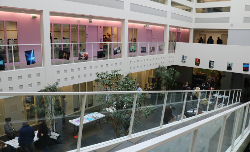

Vos 2 plus
belles années
1A Infonum
UE1 - Expression et langues
- EEO / Avant-goût du quotidien des professionnels de la communication de chez BRUT
- Anglais / Decryptage des contenus de cours suite à des soucis techniques de micro (Zoom oblige)
- Russe / Здравствуйте, меня зовут Чарлин и мне 21 год
UE2 - Décryptage en SHS
- Photoshop / Revalorisation des posts Instagram
- Economie / Moment de gloire pour les sortants de bac ES pour briller au sein de la promo
- Sociologie / Technique de gestion et de résistance au stress des questions post-exposé
- Théorie de l'infocom / Répertoire des personnalités les plus importantes dans le domaine
- Sémiologie / Tentative (vaine) de compréhension du sens des mots d'un carré sémiotique
- SHS / Qu'est-ce que l'écriture, au final ?
- Culture G / Qu'est-ce que l'écriture, mais dans une autre matière (c'est différent apparemment...)
- Culture num / Dictionnaire de termes rocambolesques sur le web, dates et noms importants
UE3 - Découverte professionelle
- PPP / your time to shine avec le plus beau CV de la promo !
- Organisation des connaissances / Ce qu'il faut retenir de la classification Dewey : 302.2 communication
- Recherche d'info / Rencontre avec nos nouveaux meilleurs amis : la norme ISO-690 et Zotero
- Bases info / Techniques d'utilisation de LibreOffice
- Droit / Théâtre "Amazon en crise existentielle"
UE4 - Méthodes et pratiques
- Culture de l'info / Le premier (mais pas le dernier) cours sur les fake news
- Bases de la com / Cours de résistance aux gros blocs de 4h sans pause en Zoom
- Publication web / Instauration de self-control et de patience lors de l'apprentissage du langage html/css
- Réalisation audiovisuelle / Qualification de photographes compétents pour vos photos Insta
- Analyse de contenu / Lecture, re-lecture, re-re-lecture, puis ré-écriture, puis ré-ré-écriture
- Economie de l'information / Gestion du stress et des soucis techniques liés aux travaux de groupe à distance
- E-réputation / Techniques de mise en avant de son profil LinkedIn en vue de devenir influenceur sur le réseau
- PMB / TP de prise en main d'un logiciel pour bibliothécaires
- Veille / Tri sélectif des informations pertinentes sur un sujet donné, overdose de Google Alerts et Feedly
- Métadonnées / Cours dispensés par le célèbre youtubeur O. Le Deuff directement sur sa chaîne (subscribe, comment, like and share !)
2A Infonum
UE1 - Expression et langues
- EEO / Concurrence directe à Baudelaire et Voltaire
- Anglais / Les 4h de cours les plus agréables et adaptés aux vendredis matins compliqués
- Espagnol / Un, dos, tres, un pasito pa'lante María
UE2 - Préfiguration professionnelle
- PPP / Compétition de la plus belle lettre de motivation
- Droit de l'info / Secret Club anti Astérix et Obélix
- Outils de com num / "On a le droit de vectoriser monsieur ?"
- Projet tut / Tentative désespérée de joindre le commanditaire absent
UE4 - Modules complémentaires préliminaires
- Stage / "Oui donc c'est 2 mois minimum. Oui. Voilà. Pas d'obligation de gratification non. Après libre à vous de... non ? D'accord..."
- PAO / Après Photoshop et Illustrator, ça doit être le tour d'Indesign si je dis pas de bêtise
- OSINT / "Franchement c'est facile, ça se voit que c'est Bruxelles... Ça se trouve en 1 seconde !"
UE3 - Prolongement des méthodes et pratiques
- Formation des usagers / Qualification de futurs influenceurs pros des tutos sur Youtube
- Stratégie de com num / Analyse des stratégies de communication d'une marque dans l'espoir d'épater leurs équipes de recrutement à l'avenir
- Intelligence co / Débat interne : popcorn sucré ou salé pour les dizaines d'exposés à écouter chaque mardi à 8h ?
- Analyse d'un système d'info / "Le cours le plus difficile", c'était pas une blague...
- Bases de données / "Mais moi j'ai pas Access sur mon ordi monsieur..."
- Prestation de veille / Analyse du mammouth, réactions cutanées immédiates à la vue du nom de l'entreprise... On souhaite un bon rétablissement à l'ensemble de la promo
- Photothèque / "Mais moi j'ai pas XnView sur mon ordi madame..."
- Archivage num / Sessions nécessaires de nettoyage et d'organisation de nos dossiers numériques
Ils le recommandent...
Moi qui souhaitais absolument faire documentaliste, je suis ravie de suivre cette formation riche d'archivage, de bibliothéconomie et de TP sur PMB ! | Etudiante en 2ème année de DUT
A la base je venais pour faire influenceur, ben écoutez aujourd'hui je compte 56 nouveaux abonnements sur ma chaîne Youtube, c'est pas mal. La formation a porté ses fruits. C'est moins que Gabriel Attal certes, mais j'pense me tourner vers la politique pour montrer mes prouesses à l'Elysée. | Etudiant en 2ème année de DUT
